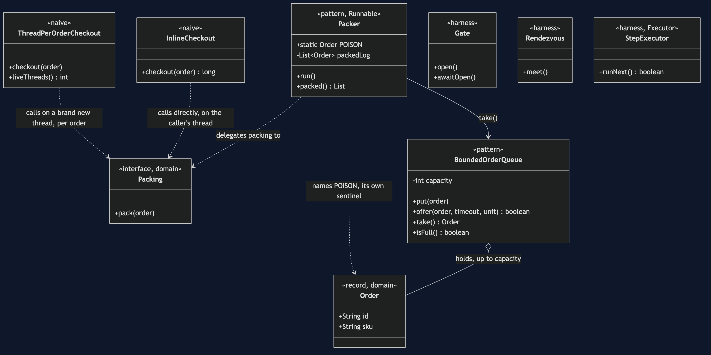
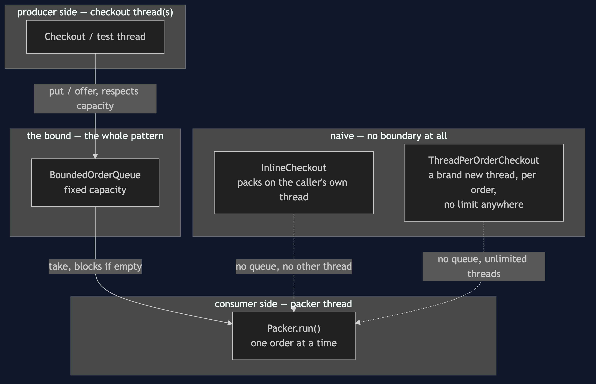
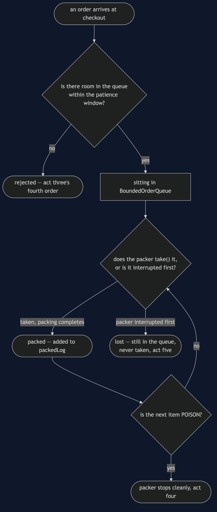
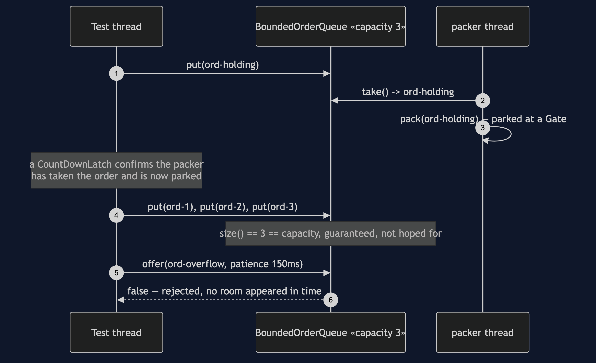
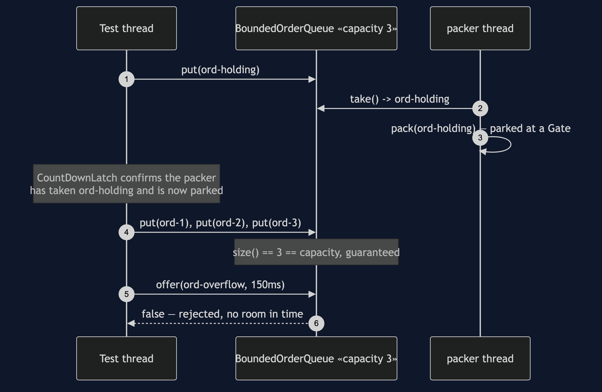
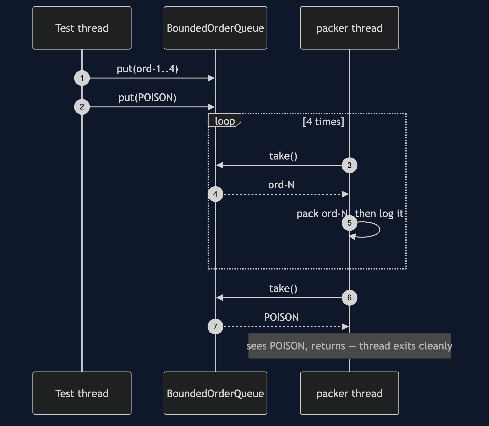
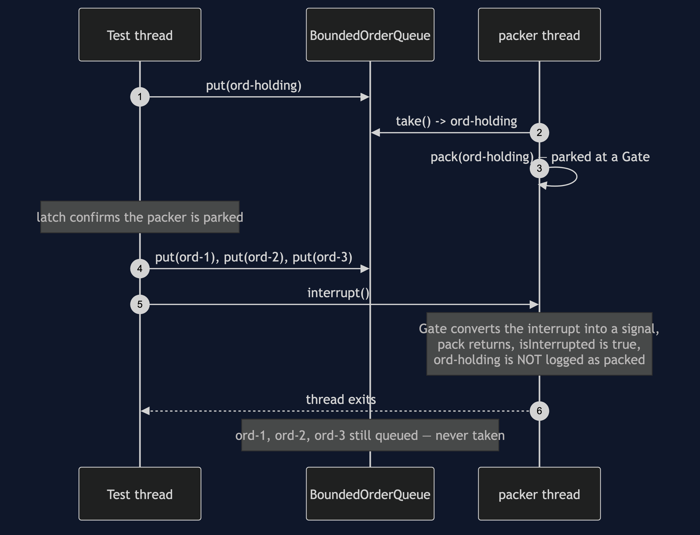

Producer–Consumer Pattern
src/main/java/com/jk/explore/producerconsumer/
├── PackingWarehouseDemo.java composition root — the five acts
│
├── domain/
│ ├── Order.java record(id, sku)
│ └── Packing.java «functional interface» pack(order)
├── harness/ ← reused by every later project in this category
│ ├── Gate.java one-shot door — provably closed until opened
│ ├── Rendezvous.java barrier that forces a specific interleaving
│ └── StepExecutor.java queues work, runs it only when told to
├── naive/ ← kept on purpose, both replaced by the pattern
│ ├── InlineCheckout.java checkout packs the order itself
│ └── ThreadPerOrderCheckout.java one new thread per order, uncapped
│
└── pattern/ ← the real thing
├── BoundedOrderQueue.java a fixed-capacity ArrayBlockingQueue<Order>
└── Packer.java the one consumer thread; Packer.POISON is the stop signalA bounded queue sits between whoever produces work and whoever consumes it, so each side runs at its own pace up to a limit that is chosen on purpose, not discovered by accident.
This is the reference project for the concurrency-design-patterns category: the queue every other pattern in this category eventually sits behind or in front of, and the project that builds the three determinism-forcing pieces — Gate, Rendezvous, StepExecutor — that every later project reuses rather than reinvents.
Run
./gradlew runFive acts.
Act one is checkout packing every order itself.
ONE. No queue at all — checkout packs the order itself.
checkout(ord-1) returned after 47ms
checkout(ord-2) returned after 41ms
checkout(ord-3) returned after 41ms
three checkouts, 129ms of it spent packing, on the checkout thread
every customer behind order one waited for order one's pack.Act two is a thread per order — fast to return, uncapped, and measured.
TWO. A thread per order — works, until it does not.
created 2,000 real threads in 94.5ms (47.2 microseconds each)
at that rate, 100,000 threads costs roughly 4724ms of creation alone —
before any of them has packed a single order.
each thread also holds a stack (default ~512KB-1MB);
that is where OutOfMemoryError: unable to create native
thread comes from. Not simulated here — a laptop that
actually hits that limit is not a teaching aid.Act three fills the bounded queue to capacity, deterministically, and shows a further order rejected.
THREE. The bounded queue — and what 'full' costs.
queue filled to capacity 3: 3
one more order, offered with a 150ms patience: REJECTED — the queue never had room in time
released: the packer drains the 3 that were queuedAct four is the clean shutdown — a poison pill drains everything ahead of it first.
FOUR. Clean shutdown — the queue drains before the packer stops.
4 orders queued, then the poison pill.
packed before stopping: 4 of 4Act five is the abrupt shutdown — an interrupt abandons whatever was still queued.
FIVE. Abrupt shutdown — whatever is still queued is lost.
1 order was being packed, 4 more were queued behind it.
the packer thread was interrupted, not signalled to drain.
orders lost, still in the queue: 4Test
./gradlew testSix test classes, twelve test methods between them, several of them run twenty times each via @RepeatedTest because a race that only sometimes reproduces has not actually been proven — 88 executions total, zero of them using Thread.sleep to wait for another thread. HarnessSelfTest proves the three shared harness pieces against real races before anything else in the project relies on them; PackerTest proves both shutdowns; BoundedOrderQueueTest proves the queue actually reaches capacity and actually rejects.
Technologies and versions
| What | Version | Why it is here |
|---|---|---|
| Java | 21 | The repository standard, via the Gradle toolchain block |
| Gradle | 9.2.1 | The wrapper in this directory; no separate install needed |
| JUnit 5 | 5.10.2 | Test runner — @RepeatedTest is how this project proves a race, not merely exercises it |
No ArchUnit, no Spring, no framework of any kind. java.util.concurrent is this category's entire subject, so every project in it, including this one, uses nothing beyond the JDK.
Learning Material
| Document | What it covers |
|---|---|
docs/problem-statement.md | The two naive versions, and what the pattern has to deliver |
docs/producer-consumer-pattern-explained.md | Why "bounded" is the whole pattern, the two ways "no" can be said, and the two shutdowns |
docs/determinism.md | The three harness pieces, where each is used, and the honesty rule about what a passing test does and does not prove |
docs/class-diagram.md | The types, and why nothing can bypass the queue's bound |
docs/architecture-diagram.md | Where each piece runs, producer side and consumer side |
docs/data-flow-diagram.md | One order, from arrival to packed, rejected, or lost |
docs/sequence-diagram.md | Who calls whom, in order — written for a listener with the screen off |
docs/uml-diagram.md | Four sequences: capacity reached, clean shutdown, abrupt shutdown, the harness's own proof |
docs/animation.html | The five acts in a browser |
docs/prerequisites.md | What you need to know, and what this project introduces from scratch |
docs/session.md | A one-hour taught session with exercises |
docs/spec.md | The generated specification, with measured test counts and timings |
docs/youtube.md | Title, description and chapters for the video |
The pattern in one picture
The single most important thing on this diagram: BoundedOrderQueue has a fixed capacity, and nothing in Checkout or Packer can bypass it — there is no path onto the queue except through a method that respects the bound.

Where each piece runs
Producer side and consumer side, and the one bounded buffer that stands between them.

How one order moves
From arrival at checkout to being packed — or rejected, or lost at an abrupt shutdown.

Who calls whom, in order
The sequence written to work with the screen off: a test thread parks the packer mid-pack behind a closed gate, confirms with a latch — not a guess — that it is truly stuck there, then fills the queue to its capacity of three and watches a fourth order get rejected after its patience runs out.

All four sequences
The full set from docs/uml-diagram.md.
One. The queue reaches capacity, and says no.

Two. Clean shutdown — the pill travels through the queue. Everything queued ahead of Packer.POISON is still taken and packed first.

Three. Abrupt shutdown — whatever is queued is lost. The interrupt stops the packer wherever it is; nothing behind it is ever reached.

Four. The harness's own proof — a lost update, every run. Rendezvous forcing two threads to both read the same stale value before either writes.

Video
The narrated walkthrough is built from video/scenes.py by video/build_video.sh. The rendered file is not committed — see the repository README for why.
When this is too much
Worth it the moment producing and consuming genuinely happen at different, independent rates — which is most real systems with any I/O in them at all. Not worth it for two pieces of code that always run in lockstep anyway; a queue between two things that can never get out of step with each other is ceremony with no back-pressure decision behind it.
Where this sits
This is the reference project for concurrency-design-patterns — first of six, built and published first because every other project in the category assumes its queue, or its three harness pieces, or both.
The next project, Thread Pool, answers the question this project leaves open on purpose: what happens when more than one consumer takes from the same queue.